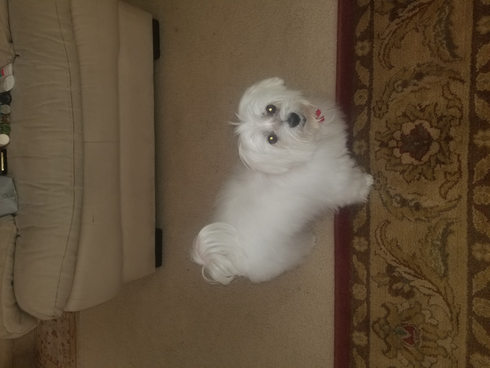

Unconditional loyalty. A monthly contrarian rotation.

17.75 years. He showed up every day. This algo does the same.
"the best there is, the best there was and the best that ever will be."
Find the most beaten‑down sector and show up for it. No filters. No hesitation. Pure loyalty to the unloved.